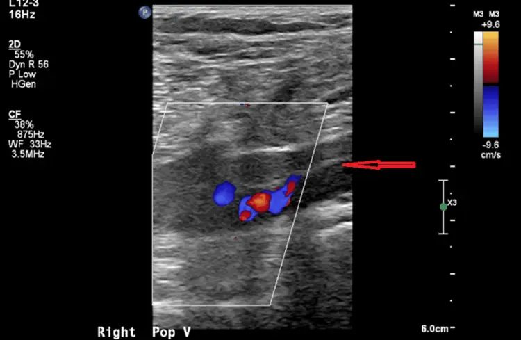

DX.6 — Thrombose veineuse profonde
1. Définition
La thrombose veineuse profonde est la formation d'un caillot dans une veine profonde, le plus souvent d'un membre inférieur (CIM-10, I80). Elle est proximale (poplitée, fémorale, iliaque) ou distale (veines du mollet). Avec l'embolie pulmonaire, elle forme la thromboembolie veineuseTerme qui réunit la TVP et l'EP, deux expressions d'une même maladie. L'EP naît d'un fragment de thrombus qui migre vers l'artère pulmonaire..
2. Épidémiologie (Suisse, puis Europe)
La thromboembolie veineuse touche 1 à 2 personnes sur 1000 par an (ASH)6. Elle cause 370 012 décès par an en Europe, dont 59 % suivent une EP non diagnostiquée (Cohen)5. Les suspects ont 59 ans d'âge médian dont 54 % de femmes (sur 3205, Le Gal)1. Chirurgie, immobilisation, cancer, grossesse et antécédent augmentent le risque ; sans dépistage systématique, la TVP non traitée expose à l'EP mortelle, que la prophylaxie hospitalière limite5. Le tableau épidémiologique précise la prévalence selon la probabilité clinique et la fréquence du syndrome post-thrombotique.
3. Physiopathologie
La triade de VirchowTrois mécanismes favorisent la thrombose : stase du sang, lésion ou activation de l'endothélium, hypercoagulabilité. Un seul suffit parfois ; ils s'additionnent souvent. explique la maladie. La cascade va du niveau moléculaire au niveau clinique.
- Amorce, niveau moléculaire : dans les poches valvulaires, le flux ralentit et l'oxygène baisse. L'endothélium devient activé et expose le facteur tissulaire.
- Développement, niveau cellulaire : le facteur tissulaire déclenche la coagulation. La thrombine convertit le fibrinogène en fibrine, qui forme un réseau. Plaquettes, globules rouges et leucocytes s'agrègent dans le réseau de fibrine.
- Installation, niveau tissulaire : le thrombus s'étend vers le haut, dans la direction du flux, ce qui le rapproche des grosses veines. Il obstrue la veine, et la pression en amont monte. Le liquide filtre vers les tissus : l'œdème apparaît.
- Maintien, niveau clinique : la fibrinolyse dissout une partie du caillot, ce qui réduit son volume. Le caillot restant détruit les valves. Un fragment peut migrer vers l'artère pulmonaire : c'est l'EP.
Le tableau de corrélation relie chaque lésion à l'examen qui la montre et au traitement qui la corrige. Ces mécanismes expliquent le pronostic. Le thrombus proximal embolise davantage que le thrombus distal. L'anticoagulation n'enlève pas le caillot : elle l'empêche de grandir et laisse l'organisme le dissoudre.
4. Démarche diagnostique
La démarche suit le titre : exclure d'abord l'urgence, puis estimer la probabilité de thrombose, puis confirmer par l'image.
Étape 1 : le médecin exclut d'abord cinq drapeaux rouges (🚩 = menace vitale ou perte de membre) : embolie pulmonaire, phlegmasia cerulea dolens, instabilité hémodynamique, saignement actif et jambe rouge fébrile. Une thrombose veineuse superficielle, cordon rouge et douloureux d'une veine sous-cutanée, peut s'étendre au réseau profond ; elle ne dispense donc pas de chercher la thrombose profonde.
Étape 2. En l'absence de drapeau rouge, quatre étapes mènent au diagnostic.
- Le médecin commence par le score de Wells, qui estime la probabilité clinique.
- Si la probabilité est faible ou la thrombose improbable, il dose les D-dimères.
- Si la probabilité est haute ou la thrombose probable, ou si les D-dimères sont élevés, il demande l'échographie de compression.
- Si l'échographie est négative alors que la probabilité est haute, il répète l'examen après 5 à 7 jours4.
Pour chaque diagnostic dangereux, un signe tranche : la veine non compressible pour la thrombose, l'angioscanner pour l'EP, la fièvre pour l'érysipèle.
5. Anamnèse ciblée et drapeaux rouges
Le symptôme d'appel est une jambe gonflée et douloureuse, dont le médecin précise le siège, le type, l'horaire, les facteurs qui la modifient et les signes associés. Les questions clés cherchent ensuite la stase, le cancer, l'antécédent, les œstrogènes, l'embolie et le risque hémorragique.
Drapeaux rouges actionnables : une dyspnée ou une syncope impose le bilan d'EP et l'anticoagulation sans attendre. Une jambe bleue avec un œdème massif impose un avis vasculaire urgent. Une tension basse impose la réanimation. Un saignement actif interdit l'anticoagulant avant l'avis spécialisé. Une grossesse impose une HBPM, jamais un AOD ni un AVK.
6. Examen physique ciblé, région par région
L'examen décrit d'abord le normal, puis le pathologique. Aucun signe clinique isolé n'exclut ni ne confirme la thrombose : le score de Wells les combine. Le médecin suit l'ordre topo-systémique : il commence par l'état général et les constantes, puis il ausculte les poumons et palpe l'abdomen et le pelvis. Il examine ensuite le membre de haut en bas : cuisse et creux poplité, mollet, jambe entière et peau. Chaque fenêtre donne le signe recherché, sa technique, son aspect et son piège.
7. Approche syndromique
7.1 Syndrome obstructif veineux du membre inférieur
Le syndrome obstructif veineux associe douleur du mollet, lourdeur, œdème unilatéral et chaleur locale, car la pression monte en amont du caillot. La fenêtre des signes donne leur recherche et leur mécanisme.
7.2 Syndrome d'embolie pulmonaire
Le syndrome d'embolie pulmonaire associe dyspnée brusque, douleur pleurale, tachycardie et désaturation, car le thrombus migré prive le poumon de perfusion. Chaque signe de l'embolie se recherche selon la fenêtre des signes.
7.3 Syndrome post-thrombotique
Le syndrome post-thrombotique associe douleur chronique, pigmentation, eczéma et ulcère, car les valves détruites entretiennent une hypertension veineuse. Leur recherche et leur mécanisme figurent dans la fenêtre des signes.
8. Diagnostic positif et critères
Le diagnostic repose sur une image : la veine profonde ne se laisse pas comprimer à l'échographie. Le score de Wells, publié en 1997 et révisé en 2003, mesure la probabilité avant l'image2,3.
| Critère clinique évalué | Points attribués |
|---|---|
| Cancer actif (traitement dans les 6 derniers mois ou palliatif)2 | 1 |
| Paralysie, parésie ou immobilisation plâtrée récente d'un membre inférieur | 1 |
| Alitement de plus de 3 jours ou chirurgie majeure dans les 12 dernières semaines2 | 1 |
| Douleur localisée sur le trajet de la veine profonde | 1 |
| Gonflement de toute la jambe | 1 |
| Mollet plus gros de plus de 3 cm que l'autre (mesuré 10 cm sous la tubérosité tibiale)2 | 1 |
| Œdème prenant le godet, limité à la jambe symptomatique | 1 |
| Veines superficielles collatérales non variqueuses | 1 |
| Antécédent de TVP documentée | 1 |
| Autre diagnostic au moins aussi probable que la TVP | −2 |
L'interprétation du score oriente vers les D-dimères ou vers l'échographie directe.
Une veine profonde non compressible à l'échographie suffit à poser le diagnostic. En revanche, des D-dimères élevés ne suffisent pas : ils montent aussi avec l'âge, le cancer, la grossesse et la chirurgie. Un score élevé seul ne suffit pas non plus. Les critères d'une société savante ne définissent pas la TVP au-delà de ce faisceau.
9. Examens complémentaires
9.a Gold standard
La phlébographieInjection de produit de contraste iodé dans une veine du pied, suivie de radiographies. Elle montre le caillot comme un défaut de remplissage. Elle est invasive et rarement utilisée. est le gold standard historique : elle a confirmé les échographies positives dans l'étude de Wells2. L'échographie de compression constitue la référence clinique. Chez des médecins généralistes formés, elle a une sensibilité de 90,0 % et une spécificité de 97,1 % pour la TVP proximale4.
9.b Examens de 1re intention
Le médecin dose les D-dimères quand la probabilité clinique n'est pas haute, car un résultat sous le seuil exclut la thrombose. Il demande l'échographie de compression quand la probabilité est haute ou les D-dimères élevés ; la fenêtre montre une veine poplitée thrombosée interprétée24.
9.c Alternatives
Chez la femme enceinte, l'échographie est l'examen de choix ; l'échographie suffit alors pour guider la décision. Avec un DFGe inférieur à 30 mL/min ou une allergie aux produits iodés, on évite phlébographie et angioscanner et on garde l'échographie1. L'IRM veineuse est l'alternative pour les veines pelviennes, sauf dispositif non compatible avec l'IRM. Chez l'enfant, la TVP est rare ; l'échographie reste l'examen de départ.
9.d Examens de 2e intention
Si l'échographie initiale est négative mais la probabilité haute, on la répète après 5 à 7 jours4. Si une EP est suspectée, un angioscanner thoracique la cherche. Avant l'anticoagulation, on prescrit hémogramme avec plaquettes, créatinine, bilan hépatique et temps de Quick. Le critère de passage est la discordance entre la clinique et une première image négative. Les cas de figure résument chaque combinaison et sa conduite1.
10. Arbre décisionnel
- Si le patient présente une dyspnée, une syncope ou une tension basse → l'EP est probable : le médecin anticoagule aussitôt et hospitalise (point 11.B.1)4.
- Si la jambe est bleue, l'œdème massif et la douleur intense → la phlegmasia impose un avis vasculaire urgent.
- Si le score de Wells est faible ou la TVP improbable → le médecin dose les D-dimères : négatifs, ils excluent la TVP ; élevés, ils imposent l'échographie.
- Si le score de Wells est élevé ou la TVP probable → le médecin demande directement l'échographie de compression.
- Si l'échographie est positive → le médecin prescrit un anticoagulant oral direct ; en cas de contre-indication, il prescrit une HBPM puis un AVK.
- Si l'échographie est négative et la probabilité haute → le médecin répète l'échographie à 5 à 7 jours4.
- Si l'œdème est bilatéral ou un autre diagnostic plus probable → le médecin cherche ce diagnostic. Les chapitres suivants le traitent : « Insuffisance veineuse chronique (œdème veineux, CEAP C3) », « Insuffisance cardiaque », « Œdème médicamenteux (inhibiteurs calciques, AINS, glitazones, corticoïdes) ».
11. Prise en charge selon les recommandations suisses
11.A But thérapeutique
Le traitement poursuit quatre buts. Le premier but vise à empêcher l'extension du thrombus et l'embolie pulmonaire dès les premières heures. Le deuxième vise à soulager les symptômes en quelques jours. Le troisième vise à prévenir la récidive pendant au moins 3 mois4. Le quatrième vise à limiter le syndrome post-thrombotique à long terme. Une récidive symptomatique est l'échec à éviter.
11.B Moyens
11.B.1 Urgences chronologiques (formes compliquées)
Urgence : embolie pulmonaire suspecte ou thrombose avec instabilité
1. T0 : évaluer voies aériennes, respiration, circulation. Mettre le patient au repos, poser une voie veineuse, donner de l'oxygène si SpO2 basse.2. Dès la suspicion forte : débuter l'anticoagulation sans attendre l'image. Choisir la Liquemin®DCI : héparine sodique (Liquemin®, n° 15159)
Classe : héparine non fractionnée (ATC B01AB01) : potentialise l'antithrombine, inhibe thrombine et facteur Xa.
Groupe : antithrombotiques, héparines (ATC B01AB). Chefs de file :
- HNF : héparine (Liquemin®) ; ses indications sont : TVP, EP, infarctus. Sa posologie AIPS est : dose initiale 5000 à 10 000 UI i.v., puis perfusion de 20 000 à 30 000 UI par jour15159. Le TCA visé atteint 1,5 à 2,5 fois la norme15159.
- HBPM : énoxaparine (Clexane®), daltéparine, nadroparine ; ses indications sont : prophylaxie et traitement.
3. Contrôler le TCA : cible 1,5 à 2,5 fois la norme, à 1-2 h, 6 h, 12 h et 24 h.
4. Si choc ou instabilité hémodynamique : réanimation et avis de médecine intensive ; l'ASH suggère la thrombolyse (recommandation conditionnelle) en cas d'EP avec compromis hémodynamique6.
5. Hospitaliser, confirmer par angioscanner, puis passer à un traitement oral.
Urgence : phlegmasia cerulea dolens
1. Appeler l'angiologue ou le chirurgien vasculaire. 2. Débuter l'héparine non fractionnée sans attendre. 3. Surélever le membre. 4. Discuter thrombolyse locale ou thrombectomie selon le centre (indication spécialisée : le centre fixe la technique et les doses).Urgence : saignement majeur sous anticoagulant
1. Arrêter l'anticoagulant. 2. Comprimer le point de saignement, assurer la voie veineuse. 3. Mesurer hémogramme, créatinine, Quick. 4. Demander l'avis d'hématologie. Sous dabigatran, l'antidote spécifique est l'idarucizumab (Praxbind®), 5 g i.v.12,17. Sous rivaroxaban, si les mesures échouent, on envisage concentré de complexe prothrombinique ou andexanet alfa, antidote des anti-Xa9. L'AIPS de chaque anticoagulant décrit la conduite en cas de saignement9,10,12.11.B.2 Hors urgence : traitement dans l'ordre
1. Mesures générales : le traitement ambulatoire est préféré pour une TVP non compliquée à faible risque (recommandation conditionnelle de l'ASH)6. Le patient reprend la marche dès que la douleur le permet. La surélévation diminue l'œdème. Il faut peser le patient et mesurer la clairance avant de choisir l'anticoagulant.
2. Pharmacologique : l'ASH préfère un anticoagulant oral direct à un AVK pour le traitement initial (recommandation conditionnelle)6. En Suisse, Greutert et coll. retiennent aussi une anticoagulation thérapeutique par anticoagulant oral direct dans la plupart des situations9. Dans l'essai COBRRA, un saignement cliniquement pertinent survient chez 3,3 % des patients sous apixaban et 7,1 % sous rivaroxaban en 3 mois (RR 0,46)7.
| Médicament | Dose AIPS pour la TVP | Contre-indications et limites |
|---|---|---|
| Xarelto® | 15 mg deux fois par jour du jour 1 au jour 21, puis 20 mg une fois par jour ; après 6 mois : 10 ou 20 mg9 | Contre-indiqué : grossesse, allaitement, endocardite aiguë, dialyse, ulcère actif |
| Eliquis® | 10 mg deux fois par jour pendant 7 jours, puis 5 mg deux fois par jour ; après 6 mois : 2,5 mg deux fois par jour10 | Contre-indiqué : saignement actif, insuffisance hépatique Child-Pugh C ; non recommandé si ClCr inférieure à 15 mL/min ; grossesse non recommandée61549 |
| Lixiana® | 60 mg une fois par jour après au moins 5 jours d'héparine ; 30 mg si ClCr 15 à 50 mL/min, poids ≤ 60 kg ou inhibiteur de la P-gp11 | Contre-indiqué pendant la grossesse ; non recommandé si ClCr inférieure à 15 mL/min65149 |
| Pradaxa®DCI : dabigatran étexilate (Pradaxa®, n° 61385) Classe : inhibiteur direct de la thrombine (ATC B01AE07). Groupe : inhibiteurs directs de la thrombine (ATC B01AE). Chefs de file :
| 150 mg deux fois par jour après au moins 5 jours d'héparine ; 110 mg deux fois par jour dès 80 ans ou si ClCr de 30 à 50 mL/min ; traitement poursuivi 6 mois au maximum pour la TVP aiguë12 | Contre-indiqué : ClCr inférieure à 30 mL/min, valves cardiaques artificielles, inhibiteurs de la P-gp61385 |
| Clexane® | 1 mg/kg SC deux fois par jour ; ou 1,5 mg/kg une fois par jour sans complication ; ClCr inférieure à 30 mL/min : 1 mg/kg une fois par jour13 | Contre-indiqué : HIT dans les 100 derniers jours, saignement actif, endocardite aiguë49456 |
| Arixtra® | 7,5 mg SC une fois par jour (50 à 100 kg), 5 mg (moins de 50 kg), 10 mg (plus de 100 kg) ; au moins 5 jours et jusqu'à INR de 2 à 314 | Contre-indiqué : insuffisance rénale sévère, saignement important ; à ne pas utiliser pour le traitement si ClCr inférieure à 30 mL/min ; jamais en voie intramusculaire55937 |
| Marcoumar® | 1½ à 3 comprimés le jour 1 (4,5 à 9 mg), 2 comprimés le jour 2, puis selon l'INR ; cible 2,0 à 3,015 | Contre-indiqué : grossesse (malformations), hémorragie ; chevauchement avec une héparine d'au moins 5 jours15,14 |
Ordre pratique : débuter un AOD, ou une HBPM pour 5 jours si on passe à l'édoxaban, au dabigatran ou à un AVK19395. Chez le patient cancéreux, le choix de l'anticoagulant relève de l'avis spécialisé.
Durée du traitement : après un premier événement avec facteur de risque transitoire (chirurgie), l'AIPS recommande 3 mois, de même qu'après un événement idiopathique distal9. En cas de TVP proximale idiopathique, le traitement dure habituellement 6 mois, avec réévaluation du bénéfice et du risque9. Une anticoagulation indéfinie est recommandée par l'ASH après une récidive de TEV non provoquée6. La revue suisse rappelle que la durée dépend surtout du risque de récidive9.
3. Non pharmacologique : les bas de contention ne préviennent pas le syndrome post-thrombotique : 14,2 pour 100 sous bas actifs contre 12,7 pour 100 sous bas factices, différence non significative8. Ils peuvent soulager l'œdème et la douleur. La marche et la surélévation aident. Le filtre cave est réservé aux contre-indications absolues de l'anticoagulation.
4. Situations spéciales : la grossesse, l'insuffisance rénale ou hépatique et l'âge modifient le choix et la dose ; la fenêtre des situations spéciales donne la conduite de l'AIPS pour chacune.
Social et professionnel : l'arrêt de travail dure selon la douleur et le travail. Un voyage long impose marche et hydratation. L'assurance-maladie (LAMal) couvre le traitement ; la LAA intervient si la thrombose suit un accident. La thrombose seule ne limite pas la conduite automobile.
11.C Surveillance
Le médecin surveille les signes de saignement, la fonction rénale, l'hémogramme et l'INR sous antivitamine K ; la fenêtre de surveillance donne le rythme et le seuil d'alerte de chacun.
11.D Pronostic
Le pronostic dépend de la cause : un facteur transitoire donne un risque de récidive plus bas qu'une thrombose non provoquée. Un syndrome post-thrombotique survient chez environ un patient sur sept à huit après une TVP proximale8. La guérison suppose que la douleur et l'œdème disparaissent et que l'anticoagulation soit menée à son terme sans récidive. La sortie d'hospitalisation exige une anticoagulation orale en place, une dose adaptée à la fonction rénale et une éducation faite. Recherche 2026 : l'essai COBRRA a comparé apixaban et rivaroxaban dans la TEV aiguë7.
12. Prévention
Primaire. Après chirurgie orthopédique majeure, l'AIPS recommande une prophylaxie : rivaroxaban 10 mg par jour, 5 semaines après chirurgie de la hanche et 2 semaines après chirurgie du genou9. L'apixaban se donne à 2,5 mg deux fois par jour, 32 à 38 jours pour la hanche et 10 à 14 jours pour le genou10. L'énoxaparine se donne à 20 mg par jour en risque modéré et à 40 mg par jour en risque élevé13. Le fondaparinux se donne à 2,5 mg par jour14. Ces mesures s'adressent aux patients opérés ou immobilisés, selon le risque du point 2.
Secondaire. Le médecin respecte la durée prescrite et réévalue le traitement à 3 et à 6 mois58728615494945655937. L'apixaban à 2,5 mg deux fois par jour prévient la récidive ; l'AIPS l'instaure à l'issue d'au moins 6 mois de traitement61549.
Tertiaire. Le médecin recherche tôt le syndrome post-thrombotique. Il soulage le patient par la surélévation et par une contention à visée symptomatique. Les bas de contention ne le préviennent pas8.
13. Points clés
- Un œdème d'une seule jambe impose le score de Wells avant tout traitement symptomatique.
- Probabilité faible ou TVP improbable : les D-dimères sous le seuil excluent la thrombose sans imagerie1.
- Chez le patient de 50 ans ou plus, le seuil de D-dimères vaut l'âge multiplié par 10 µg/L1.
- Une veine non compressible à l'échographie pose le diagnostic et déclenche l'anticoagulation.
- La grossesse exclut les AOD et les AVK : on traite par HBPM, qui ne traverse pas le placenta aux 2e et 3e trimestres13.
- Les bas de contention ne préviennent pas le syndrome post-thrombotique8.
14. Pièges et questions fréquentes à l'examen fédéral suisse
Une probabilité faible et des D-dimères à 450 µg/L chez un patient de 40 ans : fait-on une échographie ? Réponse : Non8. Le seuil est de 500 µg/L ; la TVP est exclue8.
Quel est le seuil de D-dimères d'un patient de 78 ans ? Réponse : 780 µg/L, soit l'âge multiplié par 10, dès 50 ans1.
Des D-dimères élevés confirment-ils la thrombose ? Réponse : Non. Ils sont peu spécifiques ; seule l'échographie confirme.
L'échographie est négative et la probabilité est haute : arrête-t-on le bilan ? Réponse : Non. On répète l'échographie après 5 à 7 jours4.
Quelle est la dose d'attaque du rivaroxaban pour une TVP ? Réponse : 15 mg deux fois par jour du jour 1 au jour 21, puis 20 mg une fois par jour9.
Quelle est la dose d'attaque de l'apixaban ? Réponse : 10 mg deux fois par jour pendant 7 jours, puis 5 mg deux fois par jour10.
Quel anticoagulant donne-t-on à une femme enceinte ? Réponse : Une HBPM, car l'énoxaparine ne traverse pas le placenta ; AOD et phenprocoumone sont contre-indiqués ou déconseillés13,15.
Quel INR vise-t-on sous phenprocoumone pour une TVP ? Réponse : 2,0 à 3,015.
Quelle est la durée minimale d'anticoagulation après une TVP provoquée par une chirurgie ? Réponse : 3 mois9.
Les bas de contention préviennent-ils le syndrome post-thrombotique ? Réponse : Non, l'essai randomisé ne montre aucun bénéfice8.
Sources bibliographiques
- [S1] Le Gal G, Robert-Ebadi H, Thiruganasambandamoorthy V, et al. Age-Adjusted D-Dimer Cutoff Levels to Rule Out Deep Vein Thrombosis. JAMA 2026;335(5):416-424. PMID 41490105. DOI 10.1001/jama.2025.21561. https://doi.org/10.1001/jama.2025.21561 — résumé lu le 27.10.2026.
- [S2] Wells PS, Hirsh J, Anderson DR, et al. Value of assessment of pretest probability of deep-vein thrombosis in clinical management. Lancet 1997;350(9094):1795-1798. PMID 9428249. DOI 10.1016/S0140-6736(97)08140-3. https://doi.org/10.1016/S0140-6736(97)08140-3 — résumé lu le 27.10.2026.
- [S3] Wells PS, Anderson DR, Rodger M, et al. Evaluation of D-dimer in the diagnosis of suspected deep-vein thrombosis. N Engl J Med 2003;349(13):1227-1235. PMID 14507948. DOI 10.1056/NEJMoa023153. https://doi.org/10.1056/NEJMoa023153 — résumé lu le 27.10.2026.
- [S4] Mumoli N, Cei M, Camaiti A, Palmiero G, et al. General Practitioner-Performed Compression Ultrasonography for Diagnosis of Deep Vein Thrombosis of the Leg: A Multicenter, Prospective Cohort Study. Ann Fam Med 2017;15(6):535-539. PMID 29133492. DOI 10.1370/afm.2109. https://doi.org/10.1370/afm.2109 — résumé lu le 27.10.2026.
- [S5] Cohen AT, Agnelli G, Anderson FA, et al. Venous thromboembolism (VTE) in Europe. The number of VTE events and associated morbidity and mortality. Thromb Haemost 2007;98(4):756-764. PMID 17938798. DOI 10.1160/TH07-03-0212. https://doi.org/10.1160/TH07-03-0212 — résumé lu le 27.10.2026.
- [S6] Ortel TL, Neumann I, Ageno W, et al. American Society of Hematology 2020 guidelines for management of venous thromboembolism: treatment of deep vein thrombosis and pulmonary embolism. Blood Adv 2020;4(19):4693-4738. PMID 33007077. DOI 10.1182/bloodadvances.2020001830. https://doi.org/10.1182/bloodadvances.2020001830 — résumé lu le 27.10.2026.
- [S7] Castellucci LA, Chen VM, Kovacs MJ, et al. Bleeding Risk with Apixaban vs. Rivaroxaban in Acute Venous Thromboembolism (COBRRA). N Engl J Med 2026;394(11):1051-1060. PMID 41812192. DOI 10.1056/NEJMoa2510703. https://doi.org/10.1056/NEJMoa2510703 — résumé lu le 27.10.2026.
- [S8] Kahn SR, Shapiro S, Wells PS, et al. Compression stockings to prevent post-thrombotic syndrome: a randomised placebo-controlled trial. Lancet 2014;383(9920):880-888. PMID 24315521. DOI 10.1016/S0140-6736(13)61902-9. https://doi.org/10.1016/S0140-6736(13)61902-9 — résumé lu le 27.10.2026.
- [S9] AIPS. Information professionnelle Xarelto®, n° Swissmedic 58728. https://files.refdata.ch/simis-public-prod/MedicinalDocuments/4501efdf69924f3faa47a014b172bde3-fr.html — consulté le 27.10.2026.
- [S10] AIPS. Information professionnelle Eliquis®, n° Swissmedic 61549. https://files.refdata.ch/simis-public-prod/MedicinalDocuments/cbe535f2c2af40c59f666a8110b1657c-fr.html — consulté le 27.10.2026.
- [S11] AIPS. Information professionnelle Lixiana®, n° Swissmedic 65149. https://files.refdata.ch/simis-public-prod/MedicinalDocuments/073b0453cfe742b8a3d2e29fbdccefaa-fr.html — consulté le 27.10.2026.
- [S12] AIPS. Information professionnelle Pradaxa®, n° Swissmedic 61385. https://files.refdata.ch/simis-public-prod/MedicinalDocuments/7d04036f356849259a818016ada79b50-fr.html — consulté le 27.10.2026.
- [S13] AIPS. Information professionnelle Clexane®, n° Swissmedic 49456. https://files.refdata.ch/simis-public-prod/MedicinalDocuments/3b42abe606a74cccbcbd45f823b104f3-fr.html — consulté le 27.10.2026.
- [S14] AIPS. Information professionnelle Arixtra®, n° Swissmedic 55937. https://files.refdata.ch/simis-public-prod/MedicinalDocuments/8aabacbbbb1646669ee4d83b790e0bc6-fr.html — consulté le 27.10.2026.
- [S15] AIPS. Information professionnelle Marcoumar®, n° Swissmedic 19395. https://files.refdata.ch/simis-public-prod/MedicinalDocuments/41915e928d6649a58ece4a8d4263dbf6-fr.html — consulté le 27.10.2026.
- [S16] AIPS. Information professionnelle Liquemin®, n° Swissmedic 15159. https://files.refdata.ch/simis-public-prod/MedicinalDocuments/4a29aef064d84f0c95d12d69f989249d-fr.html — consulté le 27.10.2026.
- [S17] AIPS. Information professionnelle Praxbind®, n° Swissmedic 65804. https://files.refdata.ch/simis-public-prod/MedicinalDocuments/eb102e3304654e1fb96c7a7335871810-fr.html — consulté le 27.10.2026.
- [S18] Greutert S, Robert-Ebadi H, Righini M. Thrombose veineuse profonde du membre inférieur : du diagnostic au traitement. Rev Med Suisse 2024;20(898):2266-2270. DOI 10.53738/REVMED.2024.20.898.2266 — résumé français lu le 11.11.2026.
- [S19] AIPS. Information professionnelle Actilyse®, n° Swissmedic 48313. https://files.refdata.ch/simis-public-prod/MedicinalDocuments/6aae41fea9094666bf83bbc10c8c61e8-fr.html — consultée le 11.11.2026.
Épidémiologie chiffrée de la thromboembolie veineuse
Le tableau réunit chaque chiffre avec sa population et sa source.
| Population ou indicateur (unité dans le libellé) | Valeur observée | Source et dénominateur |
|---|---|---|
| Prévalence de la TVP (%) chez 3205 consultants des urgences pour suspicion de TVP (Belgique, Canada, France, Suisse)651 | 14 % | Le Gal, JAMA 20261 |
| Prévalence de la TVP (%) si probabilité prétest faible (Wells 1997)1 | 3 % | 593 patients consécutifs2 |
| Prévalence de la TVP (%) si probabilité prétest modérée | 17 % | idem |
| Prévalence de la TVP (%) si probabilité prétest haute | 75 % | idem |
| Incidence de la thromboembolie veineuse (personnes sur 1000 par an)2 | 1 à 2 | ASH 20206 |
| TVP symptomatiques (nombre par an, six pays de l'Union européenne) | 465 715 | Cohen 20075 |
| EP (nombre par an, six pays de l'Union européenne) | 295 982 | Cohen 20075 |
| Décès liés à la thromboembolie (nombre par an, six pays de l'Union européenne) | 370 012 | Cohen 20075 |
| Décès suivant une EP non diagnostiquée (% des 370 012 décès)5 | 59 % | Cohen 20075 |
| Décès survenant à l'hôpital (part des 370 012 décès)5 | près de trois quarts | Cohen 20075 |
| Âge médian des patients suspects (années, sur 3205 patients)5 | 59 | Le Gal, JAMA 20261 |
| Femmes parmi les patients suspects (% des 3205 patients)1 | 54 % | Le Gal, JAMA 20261 |
| Syndrome post-thrombotique après une première TVP proximale, avec bas de contention actifs (pour 100 patients)1 | 14,2 | Kahn, Lancet 20148 |
| Syndrome post-thrombotique après une première TVP proximale, avec bas placebo (pour 100 patients)8 | 12,7 | Kahn, Lancet 20148 |
Corrélation : lésion, exploration, thérapeutique
Chaque lésion se lit sur un examen et se corrige par un traitement dont le mécanisme figure en dernière colonne.
| Lésion / perturbation | Exploration qui la montre | Thérapeutique qui la corrige (mécanisme) |
|---|---|---|
| Thrombus occlusif dans la veine | Échographie de compression : la veine ne s'aplatit pas sous la sonde | Anticoagulant : bloque la thrombine ou le facteur Xa et arrête l'extension du caillot |
| Génération de thrombine et lyse de la fibrine | D-dimères élevés (produits de dégradation de la fibrine) | Même anticoagulation ; la fibrinolyse endogène dissout le caillot ensuite |
| Hypertension veineuse en aval | Œdème unilatéral, mollet plus gros | Anticoagulation ; surélévation de la jambe qui diminue la pression hydrostatique |
| Fragment de thrombus dans l'artère pulmonaire | Dyspnée, tachycardie, désaturation ; angioscanner | Anticoagulation en urgence ; thrombolyse si instabilité hémodynamique6 |
| Valves veineuses détruites | Œdème chronique, pigmentation, ulcère | Pas de prévention démontrée par les bas de contention8 |
Drapeaux rouges devant une jambe gonflée
Chaque drapeau rouge porte le signe qui le reconnaît, le piège qui le fait manquer et la conduite immédiate.
| Drapeau | Signe ou examen qui tranche | Piège | Conduite immédiate |
|---|---|---|---|
| 🚩 Embolie pulmonaireRouge : un fragment du caillot obstrue l'artère pulmonaire et peut provoquer un arrêt cardiaque. | Dyspnée, douleur thoracique pleurale, tachycardie, SpO2 basse, syncope, hémoptysie | Chercher la jambe seulement | Bilan d'EP, anticoagulation immédiate si la probabilité est haute |
| 🚩 Phlegmasia cerulea dolensRouge : la thrombose iliofémorale massive bloque le retour veineux ; la jambe devient bleue, très douloureuse, et l'artère peut se comprimer. Le membre est menacé. | Œdème massif, jambe cyanosée, douleur intense, pouls faibles | Prendre la cyanose pour une ischémie artérielle seule | Avis urgent d'angiologie ou de chirurgie vasculaire, héparine |
| 🚩 Instabilité hémodynamiqueRouge : hypotension ou choc avec thrombose évoque une EP massive. L'ASH recommande alors la thrombolyse6 ; l'AIPS suisse de l'altéplase (Actilyse®) en retient l'indication dans l'embolie pulmonaire massive aiguë avec instabilité hémodynamique48313. | Tension basse, tachycardie, lactate élevé | Attendre l'imagerie avant d'agir | Réanimation, avis de médecine intensive |
| 🚩 Saignement actif ou risque hémorragiqueRouge : l'anticoagulant aggrave un saignement actif. Les contre-indications figurent dans l'AIPS de chaque anticoagulant9,13. | Saignement digestif, urinaire, cérébral récent ; plaquettes basses | Anticoaguler sans vérifier l'hémogramme | Hémogramme, avis spécialisé avant tout anticoagulant |
| 🚩 Jambe rouge, chaude, fébrileRouge : l'érysipèle peut se disséminer. Chapitre « Érysipèle, cellulite ». Il peut coexister avec une thrombose. | Fièvre, placard rouge aux bords nets | Prendre l'infection pour une thrombose | Antibiothérapie ; échographie si doute |
Questions clés de l'anamnèse
Chaque question porte la raison physiopathologique qui la rend utile.
| Question | Pourquoi elle change la décision |
|---|---|
| Quand la jambe a-t-elle gonflé, d'un seul côté ? | Le gonflement unilatéralUn caillot bloque une seule veine ; le gonflement d'une seule jambe est le signe central. aigu oriente vers la thrombose. |
| Y a-t-il eu chirurgie, plâtre, alitement de plus de 3 jours ou voyage long2? | La staseLe sang circule lentement dans les veines profondes quand les muscles du mollet ne se contractent pas. ralentit le flux et favorise le caillot. |
| Le patient a-t-il un cancer actif ou récent ? | Le cancer cause une hypercoagulabilitéLe sang forme plus facilement des caillots : facteur tissulaire tumoral et inflammation activent la coagulation. ; il augmente aussi le risque de récidive. |
| Y a-t-il un antécédent de thrombose ou d'embolie, ou une histoire familiale ? | Un antécédent personnel augmente la probabilité et prolonge parfois la durée de traitement. |
| La patiente prend-elle un œstrogène, est-elle enceinte ou en post-partum ? | Les œstrogènesHormones qui augmentent les facteurs de coagulation hépatiques ; la grossesse produit le même effet. et la grossesse favorisent l'hypercoagulabilité et changent le choix de l'anticoagulant. |
| Y a-t-il dyspnée, douleur thoracique, syncope ou hémoptysie ? | Ces signes révèlent une embolie pulmonaireUn fragment du caillot a migré vers l'artère pulmonaire : le poumon n'est plus perfusé. associée. |
| Quel est le risque hémorragique : saignement, ulcère, chirurgie récente, anticoagulant déjà pris ? | Le risque hémorragique limite le choix et la durée de l'anticoagulation. |
| Quelle est la fonction rénale connue, quel est le poids ? | Les doses de plusieurs anticoagulants dépendent de la clairance et du poids9,14. |
La jambe gonflée et douloureuse : caractérisation
Le symptôme d'appel est une jambe qui gonfle et fait mal. Le médecin le caractérise point par point, car aucun élément isolé ne confirme ni n'exclut la thrombose.
- Siège. La douleur siège au mollet ; le gonflement de toute la jambe évoque une thrombose proximale.
- Latéralité. Le gonflement touche une seule jambe, car le caillot bloque une seule veine ; c'est le signe central.
- Type. La douleur est sourde ou prend la forme d'une crampe ; la jambe paraît lourde.
- Horaire et début : le gonflement s'installe de façon aiguë, souvent après une chirurgie, un plâtre, un alitement ou un long voyage.
- Facteurs aggravants et calmants : la marche et la dorsiflexion du pied aggravent la douleur ; la surélévation soulage la lourdeur.
- Signes associés : une dyspnée brusque, une douleur thoracique pleurale, une hémoptysie ou une syncope révèlent une embolie pulmonaire et changent l'urgence.
Typique ou non : le tableau est typique quand le gonflement aigu reste unilatéral et suit un facteur de stase. Il devient atypique quand l'œdème est bilatéral, ou quand une fièvre et un placard rouge aux bords nets orientent vers l'érysipèle. Un tableau atypique n'exclut pourtant rien : le score de Wells et l'échographie tranchent.
Examen : général et constantes
Pouls, tension, saturation et fréquence respiratoire
Technique. Le médecin compte le pouls, mesure la tension, pose l'oxymètre au doigt et compte la fréquence respiratoire.
Aspect normal : les constantes restent normales pour l'âge.
Aspect pathologique : une tachycardie, une polypnée ou une désaturation orientent vers l'embolie pulmonaire et imposent son bilan.
Piège. Des constantes normales n'excluent pas une embolie pulmonaire.
Examen : poumons
Auscultation pulmonaire
Technique. Le médecin écoute les bases et les sommets, patient assis, pendant une respiration profonde.
Son normal : le murmure vésiculaire reste clair et symétrique.
Son pathologique : un frottement pleural ou des crépitants localisés évoquent l'infarctus pulmonaire.
Piège. L'auscultation reste souvent normale dans l'embolie pulmonaire.
Examen : abdomen et pelvis
Masse pelvienne, hernie, cancer
Technique. Le médecin palpe l'abdomen et réalise le toucher pelvien selon le contexte.
Aspect normal : l'abdomen est souple, sans masse.
Aspect pathologique : une masse fait chercher un cancer, qui cause la thrombose par hypercoagulabilité ou par compression veineuse.
Piège. L'examen reste normal dans la plupart des cas.
Examen : cuisse et creux poplité
Douleur sur le trajet veineux profond
Technique. Le médecin recherche une douleur en palpant la face interne de la cuisse et le creux poplité le long de la veine.
Aspect normal : la palpation reste indolore.
Aspect pathologique : une douleur localisée sur le trajet profond compte comme un item du score de Wells.
Piège. Une douleur musculaire provoque un faux positif.
Examen : mollet
Périmètre du mollet
Technique. Le médecin mesure le périmètre 10 cm sous la tubérosité tibiale, des deux côtés, patient couché2.
Aspect normal : les deux mollets restent symétriques.
Aspect pathologique : un mollet plus gros de plus de 3 cm que l'autre compte comme un item du score de Wells2.
Piège. Une atrophie musculaire ou une prothèse limite la comparaison.
Signe de Homans
Technique. Le médecin fléchit le genou et met le pied en dorsiflexion passive ; il cherche une douleur du mollet.
Valeur. Le signe a une sensibilité et une spécificité faibles ; il ne remplace ni le score ni l'échographie.
Piège. Un signe absent n'exclut rien, et un signe présent n'oriente pas seul.
Examen : jambe entière
Œdème unilatéral prenant le godet
Technique. Le médecin recherche le godet : il presse quelques secondes sur la face antérieure du tibia avec le pouce, puis il observe l'empreinte.
Aspect normal : aucune empreinte ne persiste.
Aspect pathologique : l'empreinte persiste d'un seul côté : cet œdème limité à la jambe symptomatique compte comme un item du score de Wells.
Piège. Un œdème bilatéral ne permet pas d'écarter une thrombose d'un côté.
Gonflement de toute la jambe
Technique. Le médecin mesure du regard les deux jambes, du pied à la cuisse.
Aspect pathologique : toute la jambe gonflée compte comme un item du score de Wells et évoque une thrombose proximale.
Examen : peau
Veines superficielles collatérales
Technique. Le médecin inspecte la jambe et le bas-ventre ; il cherche des veines dilatées non variqueuses.
Aspect normal : la peau ne montre aucune veine dilatée.
Aspect pathologique : des veines collatérales comptent comme un item du score de Wells et rendent la thrombose plus probable.
Piège. Le médecin distingue ces veines des varices.
Chaleur et rougeur
Technique. Le médecin recherche une chaleur locale avec le dos de la main, sur les deux jambes.
Aspect pathologique : une rougeur chaude évoque l'érysipèle ou une thrombose superficielle ; si elle s'accompagne de fièvre, elle oriente vers l'érysipèle.
Syndrome obstructif veineux du membre inférieur
Chaque signe porte son geste de recherche et son mécanisme.
| Signes fonctionnels | Signes physiques et geste de recherche | Mécanisme |
|---|---|---|
| Douleur du molletDouleur sourde ou crampe, aggravée par la marche ou la dorsiflexion du pied., lourdeurSensation de jambe pesante, soulagée par la surélévation. | Œdème unilatéralPresser quelques secondes sur le tibia. Normal : pas d'empreinte. Pathologique : empreinte d'un seul côté. ; mollet augmenté de plus de 3 cmMesurer 10 cm sous la tubérosité tibiale des deux côtés2. Normal : écart inférieur à 3 cm. ; chaleur locale | Obstruction veineuse : la pression d'amont monte et le liquide filtre vers le tissu |
Syndrome d'embolie pulmonaire
Chaque signe porte son geste de recherche et son mécanisme.
| Signes fonctionnels | Signes physiques et geste de recherche (%) | Mécanisme |
|---|---|---|
| Dyspnée brusqueEssoufflement d'apparition rapide, sans cause évidente., douleur pleuraleDouleur thoracique latérale, aggravée par l'inspiration profonde., hémoptysie, syncope | TachycardiePouls compté 30 secondes. Normal : 60 à 100 par minute au repos. ; polypnée ; désaturationOxymètre au doigt. Normal : saturation de 95 % ou plus à l'air ambiant. | Le thrombus obstrue l'artère pulmonaire : la ventilation n'est plus perfusée et le cœur droit se surcharge |
Syndrome post-thrombotique
Chaque signe porte son geste de recherche et son mécanisme.
| Signes fonctionnels | Signes physiques et geste de recherche | Mécanisme |
|---|---|---|
| Douleur et lourdeur chroniquesGêne de la jambe, qui augmente en fin de journée et s'améliore au repos., prurit | Pigmentation et eczémaInspecter le bas de la jambe : tache brune et peau sèche, rouge, prurigineuse. ; ulcère veineux ; œdème persistant | Valves détruites par le caillot : reflux et hypertension veineuse chronique8 |
Score de Wells : interprétation et usage immédiat
Le total du score classe le patient en trois niveaux ou en deux niveaux ; chaque classe porte sa conduite.
D-dimères
Ce que mesure l'examen : les D-dimères sont des produits de dégradation de la fibrine ; le laboratoire les dose sur un tube citraté, par un test de haute sensibilité.
Indication. Le médecin les demande si la probabilité est faible ou modérée, ou si la TVP est improbable.
Valeurs. Le seuil vaut 500 µg/L, soit 0,5 mg/L en unités SI1. Dès 50 ans, le seuil ajusté à l'âge correspond à l'âge multiplié par 10 µg/L1.
Interprétation. Sous le seuil, la TVP est exclue, sans échographie ni anticoagulant. Entre 500 µg/L et le seuil ajusté, chez le patient de 50 ans ou plus, la TVP reste exclue : aucun échec n'est survenu sur 161 patients1. Au-dessus du seuil, le résultat impose l'échographie de compression.
Le seuil ajusté à l'âge augmente le nombre de patients épargnés par l'imagerie1. Chez les patients de probabilité non haute, 24,5 % ont des D-dimères inférieurs à 500 µg/L et 7,4 % de plus passent sous le seuil ajusté1. Chez les 75 ans et plus, la proportion de D-dimères négatifs augmente de 8,7 % à 26,1 %, sans faux négatif1.
Piège. Le test est peu spécifique : il monte aussi avec l'âge, le cancer, la grossesse et la chirurgie.
Échographie de compression
Indication. Le médecin la demande si la probabilité est haute ou si les D-dimères sont élevés.
Technique. L'opérateur pose une sonde linéaire sur la veine fémorale commune, puis sur la veine poplitée, et appuie pour aplatir la veine. L'examen porte sur les veines proximales ou sur la jambe entière.
Aspect normal : la veine s'aplatit complètement sous la sonde.
Aspect pathologique : la veine reste ronde et son contenu est échogène : l'anticoagulation commence aussitôt.
Piège. L'examen des seules veines proximales ne voit pas une thrombose distale ; si la probabilité est haute et la veine compressible, l'opérateur répète l'examen après 5 à 7 jours4.
Thrombose de la veine poplitée droite à l'échographie. Échographie de compression du creux poplité droit avec Doppler couleur

Lisez d'abord seul ce cliché (thrombose de la veine poplitée droite à l'échographie) : cherchez vous-même le signe.
La copie annotée (thrombose de la veine poplitée droite à l'échographie) porte les repères numérotés, qui sont décrits ci-dessous.
- La flèche des auteurs désigne la veine poplitée : elle est dilatée et ne se laisse pas comprimer par la sonde, ce qui signe la thrombose aiguë.
- Le libellé « Right Pop V » indique le site exploré : la veine poplitée droite, deuxième site de compression après la veine fémorale commune.
- Une veine poplitée compressible ne permet pas d'écarter une thrombose distale des veines du mollet.
- Une probabilité haute avec une première échographie négative impose de répéter l’examen.
Ce que l'image décide : une veine profonde non compressible pose le diagnostic de thrombose : le médecin commence l’anticoagulation sans autre examen de confirmation.
Cas de figure des examens
Le tableau croise la probabilité clinique et les résultats des examens pour donner la conduite.
| Situation | Signification | Conduite |
|---|---|---|
| Probabilité faible et D-dimères négatifs | TVP exclue | Chercher un autre diagnostic |
| Échographie positive | TVP confirmée | Anticoagulation |
| Probabilité haute et échographie négative | Discordance | Répéter l'échographie à 5 à 7 jours4 |
| D-dimères élevés et échographie négative | TVP peu probable, cause non thrombotique des D-dimères | Chercher cancer, infection, grossesse |
Situations spéciales : grossesse, rein, foie, sujet âgé
Chaque situation porte la conduite que fixe l'AIPS de la molécule.
| Situation | Conduite selon l'AIPS |
|---|---|
| Grossesse | Rivaroxaban contre-indiqué9 ; édoxaban contre-indiqué11 ; apixaban non recommandé10 ; dabigatran à éviter sauf nécessité absolue12 ; phenprocoumone contre-indiquée, malformations et mort fœtale possibles15. L'énoxaparine ne traverse pas le placenta aux 2e et 3e trimestres ; elle ne s'utilise que sur besoin clinique réel ; péridurale au moins 24 heures après la dernière dose13. |
| Allaitement | Rivaroxaban contre-indiqué ; édoxaban contre-indiqué ; apixaban : décider entre arrêt de l'allaitement et du traitement ; dabigatran : ne pas allaiter. |
| Insuffisance rénale (paliers de ClCr) | 15 à 29 mL/min : rivaroxaban avec prudence et surveillance étroite ; moins de 30 : énoxaparine 1 mg/kg une fois par jour, dabigatran contre-indiqué, fondaparinux à ne pas utiliser pour le traitement (de 30 à 50 : l'AIPS demande une réduction de dose, fixée avec un spécialiste) ; moins de 15 : apixaban et édoxaban non recommandés, rivaroxaban à ne pas utiliser ; dialyse : rivaroxaban contre-indiqué9,10,11,12,13,14. |
| Insuffisance hépatique | Apixaban contre-indiqué en Child-Pugh C ; dabigatran contre-indiqué en cas d'atteinte hépatique qui affecte la survie12. |
| Sujet âgé | Vérifier clairance et poids avant la dose ; dabigatran à 110 mg deux fois par jour dès 80 ans12 ; le seuil d'âge ajusté des D-dimères aide au diagnostic1. |
| Enfant | Rivaroxaban pédiatrique : 15 mg une fois par jour de 30 à 50 kg, 20 mg à partir de 50 kg, après au moins 5 jours d'anticoagulant parentéral9. |
Surveillance sous anticoagulant
Chaque paramètre porte son rythme et son seuil d'alerte.
| Quoi | Quand | Seuil d'alerte |
|---|---|---|
| Signes de saignement | À chaque contact | Tout saignement : évaluer, hémogramme |
| Créatinine et poids | Avant le traitement, puis selon l'AIPS | ClCr sous 30 mL/min : adapter ou changer58728 |
| INR sous AVK | Dès le 3e ou 4e jour, puis régulièrement | INR hors de 2,0 à 3,0 ; pas de dose si INR supérieur à 4,515 |
| Plaquettes sous héparine | Selon l'information professionnelle | Chute des plaquettes : HIT possible13 |
| Bénéfice et risque | À 3 mois et à 6 mois49456 | Décider de l'arrêt ou de la poursuite9 |